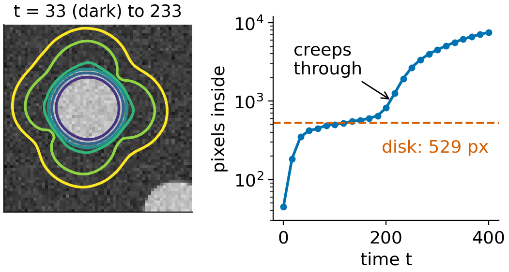
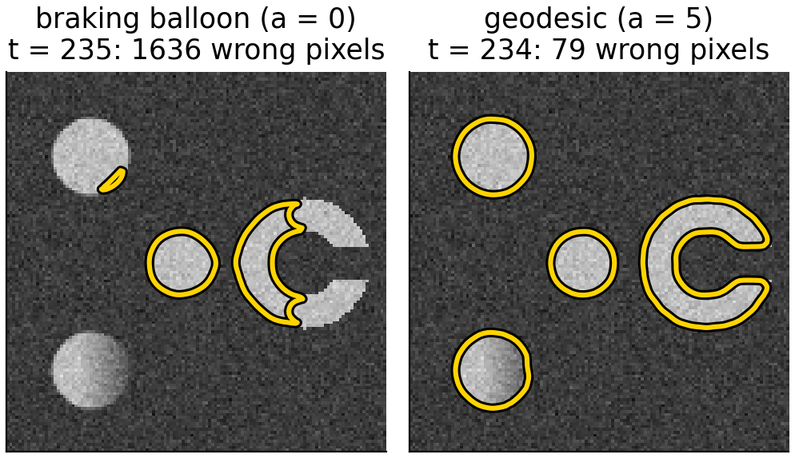
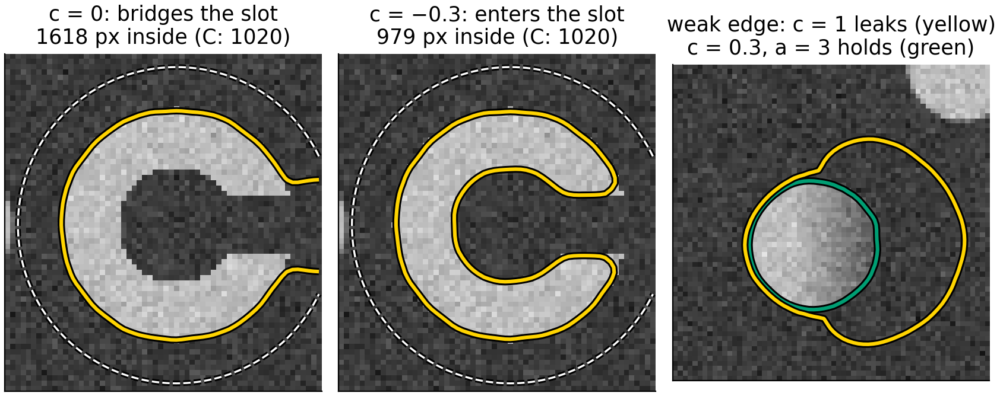
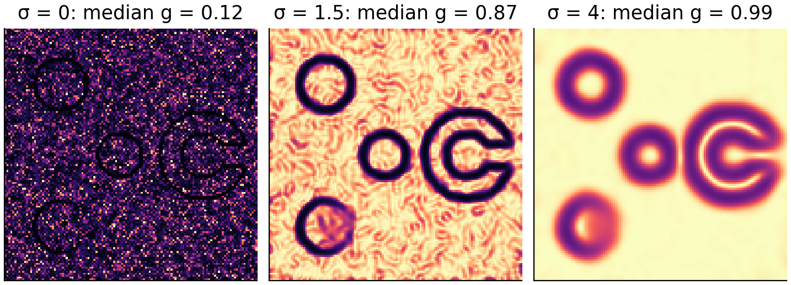
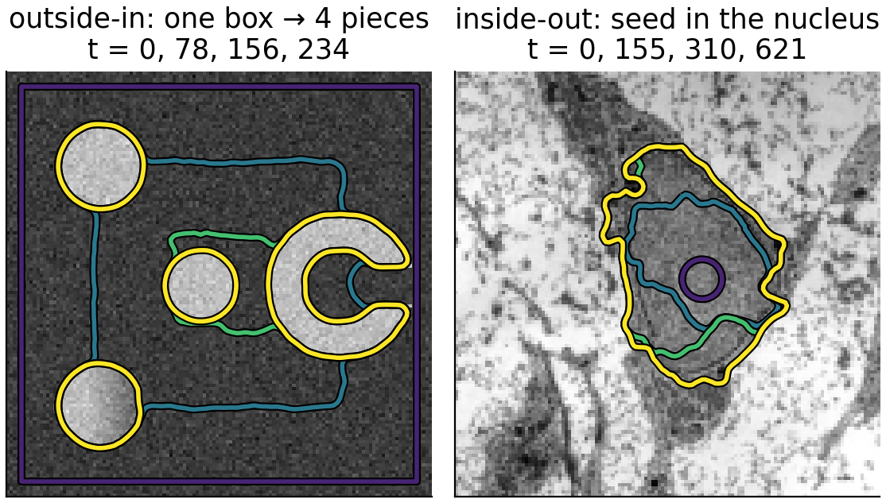

We can now move a curve with any speed F. To segment an image, let the image decide the speed: fast where nothing happens, almost zero on edges. The front then stops on object boundaries, and it can split around several objects on its own.
Recall: snakes, and what they could not do.
The edge-stopping functiong: the image turned into a speed.
Stage 1: a balloon that brakes at edges.
Stage 2: geodesic active contours: the shortest curve in an image-weighted metric, with a pull into the edge.
What the knobs do, and the typical failures: leaking through weak edges, getting stuck in concavities and noise.
Slides titled The math give the formulas and proofs; the ideas are complete without them.
A snake is an explicit closed curve that moves downhill on an energy: internal (elasticity \alpha, rigidity \beta: short and smooth) plus image (large edge strength |\nabla I|^2 is attractive).
It works, given a good start: it refines a curve you place near the object.
Fixed topology: one snake, one curve. Two objects need two snakes; it cannot split or merge.
Points bunch up or spread out and must be re-sampled; nothing prevents self-intersection.
A balloon force helps it reach far edges, and leaks through weak ones.
Level sets keep the idea (an energy, a pull towards edges, a balloon) and drop the points.
The image as a speed
Make a function that is about 1 in flat regions and about 0 on edges: g = \frac{1}{1 + |\nabla I_\sigma|^2 / k^2}, \qquad I_\sigma = \text{the image smoothed with a Gaussian of width } \sigma.
|\nabla I_\sigma|: the edge strength, from Gaussian smoothing and differences of neighbours (Filtering & convolution, the edges day).
k sets what counts as an edge: where |\nabla I_\sigma| = k, g = 0.5; at 3k, g = 0.1.
\sigma suppresses noise: without smoothing every noisy pixel looks like a small edge.
A front moving with speed g slows to 22% at the edge, but does not stop: with k = 2 this edge is not strong enough to fall below 0.1. That needs |\nabla I| > 3k, i.e. k < 1.25.
A balloon alone never stops exactly: g > 0 everywhere. Something must pull it back into the edge.
Stage 1: a balloon that brakes
Use g as a brake on the motion of unit 2: F = g\,(c - \varepsilon\kappa) (Caselles et al., 1993; Malladi, Sethian & Vemuri, 1995).
c: the balloon, a constant push; c > 0 inflates a curve placed inside an object, c < 0 shrinks one placed around it.
\varepsilon\kappa: smooths the curve, as in curvature flow.
In flat regions g \approx 1: the front moves at speed c. On an edge g \approx 0: it nearly stops.
Nearly: where g is 0.06 (a strong edge in the demo) the front still creeps at 6% of its speed, and on a weak edge (g = 0.44) it hardly slows at all.

The math: the braking balloon
The level set form, with \phi < 0 inside: \phi_t = -g\,(c - \varepsilon\kappa)\,|\nabla\phi| = -g\,c\,|\nabla\phi| + \varepsilon\,g\,\kappa\,|\nabla\phi|.
The first term is a wave with speed g c: upwind differences, time step \Delta t \le \Delta x/(\sqrt2\max|gc|).
The second is a weighted curvature flow: central differences, \Delta t \le \Delta x^2/(4\varepsilon\max g).
A front is in equilibrium only where g(c - \varepsilon\kappa) = 0: on the edge only if g = 0 exactly, or where curvature balances the balloon, \kappa = c/\varepsilon, which is a property of the shape, not of the image.
Stage 2: geodesic active contours
Caselles, Kimmel & Sapiro (1997): look for the curve with the smallest edge-weighted lengthL_g(C) = \oint_C g\,ds.
Ordinary length counts every bit of curve as 1. Here a bit of curve on an edge costs almost nothing (g \approx 0) and in a flat region costs 1. The cheapest closed curve runs along the edges: a geodesic (shortest path) in this image-made distance.
Moving downhill on L_g gives the braking curvature term plus a new term: an advection along -\nabla g, which points from both sides into the valley of g (green arrows in the figure on the previous slide).
The advection pulls a front that has overshot an edge back into it, and holds it there.

The math: the geodesic active contour flow
Moving the curve outward by \delta changes the weighted length by \oint(g\kappa + \nabla g\cdot\mathbf n)\,\delta\,ds (first variation; not derived here). Gradient descent therefore moves it with outward normal speed F = -(g\kappa + \nabla g\cdot\mathbf n). With the balloon and \phi < 0 inside: \phi_t = -g\,c\,|\nabla\phi| + \varepsilon\,g\,\kappa\,|\nabla\phi| + a\,\nabla g\cdot\nabla\phi .
The last term is transport with velocity \mathbf v = -a\nabla g: \phi_t + \mathbf v\cdot\nabla\phi = 0. It moves the curve along -\nabla g, into the edge; upwind differences per component, \Delta t\,(|v_x| + |v_y|) \le \Delta x.
The geodesic flow itself has a = \varepsilon; the demo lets you set a separately (0 = stage 1).
At a perfect edge, \nabla g\cdot\mathbf n changes sign across the valley: the curve is pushed in from both sides and stays.
Try it: shrink-wrap
The balloon: needed, and dangerous
Flat regions: away from edges \nabla g \approx 0 and \kappa of a large curve is small: without c the front barely moves. The balloon carries it across.
Concavities: a front shrinking onto a C shape bridges the opening with a straight segment (\kappa = 0, g \approx 1, no edge nearby). Only the balloon pushes it into the slot.
Leaking: a large |c| pushes through a weak part of an edge, where g is not small and \nabla g is shallow. Once through, the front floods everything behind it.
Choose c just large enough: the demo’s weak edge holds with c = 0.3 and strong advection, and leaks with c = 1.

Try it: leaks and concavities
Choosing σ and k
\sigma (smoothing): too small, noise makes g small everywhere and the front sticks in the noise; too large, nearby edges blur together and weak edges vanish.
k (edge scale): about the edge strength you want to stop at. Too large: g stays near 1 on real edges and the front passes; too small: noise and texture inside the object count as edges.
c, \varepsilon, a: balloon to travel, curvature to stay smooth and ignore single noisy pixels, advection to lock onto the edge.
The parameters depend on the image’s contrast and noise: an edge-based method sees only local differences, never the intensity of a whole region.

Inside-out or outside-in
Outside-in: start with one large curve around everything, c < 0. It shrinks onto the objects and splits into one curve per object; nobody has to say how many objects there are.
Inside-out: start with small seeds inside objects, c > 0. Each grows to its boundary; seeds in the same object merge.
Either way, the topology is decided by the image, not by the initial curve: the main advantage over snakes.
Pointer: if the front only ever grows (c > 0, no curvature), its arrival time can be computed in one sweep instead of many time steps: fast marching, on the dynamic programming day.

Micrograph: transmission electron micrograph of a mesenchymal stem cell, Robert M. Hunt, CC BY 3.0, via Wikimedia Commons.
Summary
Edge-stopping function g = 1/(1 + |\nabla I_\sigma|^2/k^2): about 1 in flat regions, about 0 on edges.
Braking balloon: F = g(c - \varepsilon\kappa): a front that slows down at edges, but never stops exactly.
Geodesic active contours: minimise \oint g\,ds; an extra advection along -\nabla g pulls the front into the edge and holds it.
The balloon crosses flat regions and enters concavities; too strong, it leaks through weak edges.
σ and k decide what counts as an edge; noise without smoothing stops the front everywhere.
One curve splits around many objects; seeds merge: topology for free.